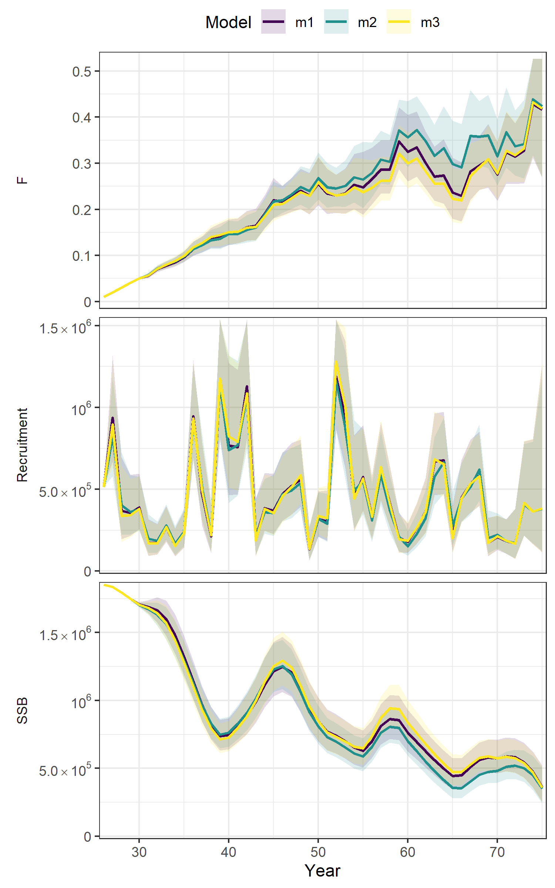

Incorporating length information and growth estimation in the Woods Hole Assessment Model (WHAM)
Giancarlo M. Correa\(^1\), Cole Monnahan\(^2\), Jane Sullivan\(^3\), James T. Thorson\(^2\), Andre E. Punt\(^1\)
\(^1\)University of Washington, Seattle, WA
\(^2\)Alaska Fisheries Science Center, NOAA, Seattle, WA
\(^3\)Alaska Fisheries Science Center, NOAA, Juneau, AK
Outline
- State-space assessment models
- The Woods Hole Assessment Model (WHAM)
- Limitations
- New features in WHAM
- Examples
State-space assessment models
Allows separation of both observation and process errors.
Observation equation:
\[E[Y_t \mid X_t]= g(X_t,\theta)\]
Process equation:
\[E[X_t \mid X_{t-1}] = h(X_{t-1},\theta)\]
\(X_t\) is the unobserved state at time step \(t\) and \(Y_t\) are observations. \(\theta\) is the vector of all unknown model parameters (fixed effects). \(X_t\) treated as random effects (Aeberhard et al. 2018).
State-space assessment models
Why use them? (Aeberhard et al. 2018, Stock and Miller, 2021)
- handle structural breaks, time-varying parameters
- handle missing observations
- can be used to do forecasting
- model complex and nonlinear relationships
- less retrospective bias
Great talk by Emily M. Liljestrand on state-space models.
The Woods Hole Assessment Model (WHAM)
- Fully state-space age-structured model
- Developed from ASAP3 (built in ADMB)
- Data: catch, indices of abundance, age compositions, empirical weight-at-age
- Environmental covariates (mechanistic approach)
- Written in TMB and R (user friendly!) ( see R package ).
The Woods Hole Assessment Model (WHAM)
The Woods Hole Assessment Model (WHAM)
Random effects in:
- Selectivity parameters
- Natural mortality
- Abundance-at-age
- Catchability
Stock and Miller et al., 2021
The Woods Hole Assessment Model (WHAM)
Yellowtail flounder on the US East Coast (Stock and Miller, 2021):

The Woods Hole Assessment Model (WHAM)
Limitations:
- best practices for random effects use
- length information and growth modeling not available
- single sex, no spatial component, no aging error
- only selectivity-at-age
- only input empirical weight-at-age
Great talk by Brian Stock and Tim Miller on WHAM.
WHAM expansion
Data inputs
- (Marginal) length compositions
- Conditional age-at-length
- Input age-length transition matrix (\(\phi_{f,l,a}\))
Growth modeling
- Use input age-length transition matrix
To distribute abundance-at-age to abundance-at-age and length.
Growth modeling
- Use von Bertalanffy growth equation:
The mean length-at-age at the start of the year (\(y=1\)):
\[\tilde{L}_{y,a} = L_{\infty}+(L_1 + L_{\infty})exp(-k(a-1))\]
and when \(y>1\):
\[\tilde{L}_{y,a} = \begin{cases} L_1, & \mbox{if } a=1 \\ \tilde{L}_{y-1,a-1}+(\tilde{L}_{y-1,a-1}-L_{\infty})(exp(-k)-1) & \mbox{otherwise} \end{cases}\]
Growth modeling
- Use von Bertalanffy growth equation:
Then, to calculate the mean length-at-age at any fraction of the year:
\[L_{y,a} = \tilde{L}_{y,a} + (\tilde{L}_{y,a} - L_{\infty})(exp(-kf_y)-1)\]
\(f_y\) is the year fraction.
Growth modeling
- Use von Bertalanffy growth equation:
Also, \(L_{y,a}\) and variation of length-at-age ( \(\sigma_a\) ) are used to calculate the age-length transition matrix (Stock Synthesis - SS - approach):
\[\phi_{y,l,a} = \begin{cases} \Phi(\frac{L'_{min}-L_{y,a}}{\sigma_{y,a}}) & \mbox{for } l=1 \\ \Phi(\frac{L'_{l+1} - L_{y,a}}{\sigma_{y,a}}) - \Phi(\frac{L'_{l} - L_{y,a}}{\sigma_{y,a}}) & \mbox{for } 1<l<n_L \\ 1-\Phi(\frac{L'_{max} - L_{y,a}}{\sigma_{y,a}}) & \mbox{for } l = n_L \end{cases}\]
Growth modeling
- Use von Bertalanffy growth equation:
Random effects on growth parameters can be modeled:
\[log(L_{\infty_t}) = \mu_{L_\infty} + \delta_{1,t}\]
\[log(k_t) = \mu_{k} + \delta_{2,t}\]
\[log(L_{1_t}) = \mu_{L_1} + \delta_{3,t}\]
\(t\) reprents year or cohort effects and can be \(iid\) or \(AR1\).
Growth modeling
- Estimate mean length-at-age:
For this case, mean length-at-age ( \(\tilde{L}_{a}\) ) are assumed to be parameters and can be estimated. \(\sigma_a\) still needed.
Time variability can be modeled by including random effects:
\[log(\tilde{L}_{y,a}) = \mu_{\tilde{L}_{a}} + \delta_{a,y}\]
\(\delta_{a,y}\) can vary by year and age.
Length-weight relationship
This is optional in case empirical weight-at-age information is not provided:
\[w_l = \Omega_1 l^{\Omega_2}\]
Random effects on \(\Omega_1\) and \(\Omega_2\) can also be estimated, similarly to growth parameters.
Then, we can calculate the population weight-at-age at any moment during the year:
\[\hat{w}_{y,a} = \sum_l \varphi_{y,l,a}w_l\]
Selectivity
Originally, these selectivity-at-age functions were available:
age-specific: by age.logistic: increasing logistic.double-logisticdecreasing-logistic
Variability by year and parameter autocorrelation.
Selectivity
We incorporated one extra option:
double-normal: SS-like (Methot and Wetzel, 2013)
But also some selectivity-at-length functions:
len-logistic: increasing logistic at lengthlen-decreasing-logisticlen-double-normal
Environmental covariates
\(X_t\) (unobserved environmental variable at time \(t\) ) can be linked to any parameter presented here Stock and Miller, 2021.
Two options for the process model:
- Random walk:
\[X_{t+1}|X_{t}\sim N(X_t,\sigma_X^2)\]
\(\sigma_X^2\) is the process variance.
Environmental covariates
- AR(1):
\[X_1 \sim N(\mu_X , \frac{\sigma_X^2}{1-\phi_X^2})\]
\[X_t \sim N(\mu_X (1-\phi_X) + \phi_X X_{t-1}, \sigma_X^2)\]
\(\mu_X\), \(\sigma_X^2\), and \(\mid \phi_X \mid < 1\) are the marginal mean, conditional variance, and autocorrelation parameter.
Environmental covariates
Observations \(Y_t\) are assumed to be normally distributed with mean \(X_t\) and variance \(\sigma_{Y_t}^2\):
\[Y_t \mid X_t \sim N(X_t, \sigma_{Y_t}^2)\]
\(\sigma_{Y_t}^2\) treated as known or estimated.
Environmental covariates
An environmental covariate can be linked to a state (i.e. parameter):
\[P_t = P exp(\beta_1 X_t)\]
\(P\) is the base state (parameter) value.
Other links are also available (polynomials). Lags can be modeled.
Examples
Examples
Using SS ( ss3sim, Anderson et al., 2014 ), we simulated data that was then incorporated into WHAM.
- Growth variability
- Conditional age-at-length (CAAL) data
- Length-weight variability
Growth variability
Simulate data:
- catch (one fishery)
- index of abundance (one survey)
- length compositions (fishery and survey)
- temporal variability in asymptotic length ( \(L_\infty\) ) using PDO as the driver
Growth variability
We implemented three models in WHAM:
- Random effects (by year) on \(L_\infty\)
- Random effects on mean length-at-age (LAA)
- Included an environmental variable (PDO), linked to \(L_\infty\)
Growth variability
Models:
m1: random effects (by year) on \(L_\infty\)m2: random effects on mean length-at-age (LAA)m3: environmental variable (PDO), linked to \(L_\infty\)

Growth variability
- LAA: mean length-at-age at the start of the year
- Still exploring these differences
CAAL data
Simulate data:
- catch (one fishery)
- index of abundance (one survey)
- length compositions (fishery)
- conditional age-at-length (survey)
- selectivity-at-length
CAAL data
CAAL residuals:
CAAL data
Estimated selectivity-at-length:
Length-weight variability
Simulate data:
- catch (one fishery)
- index of abundance (one survey)
- length compositions (fishery and survey)
- empirical weight-at-age data fitted
- temporal variability in the \(\Omega_1\) parameter (L-W relationship)
Length-weight variability
Summary
- more frequent with TMB (mostly in Europe and US East Coast)
- coherent way to include climate indices into assessments (and projections!)
- new tools developed in this project to apply them in the West Coast and Alaska region
- future projects: sex and spatial structure
- interest in organizing a workshop and applications (e.g. GOA pollock)
Thanks for listening
Contact:
gcorrea@uw.edu
giancarlo.correa@noaa.gov